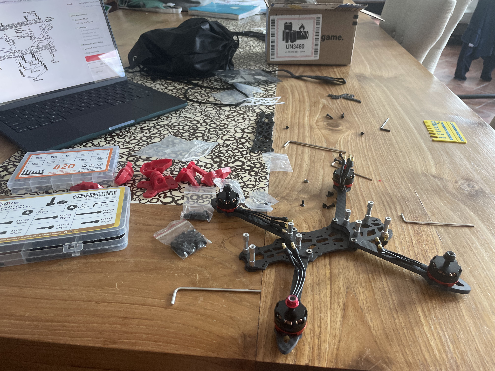
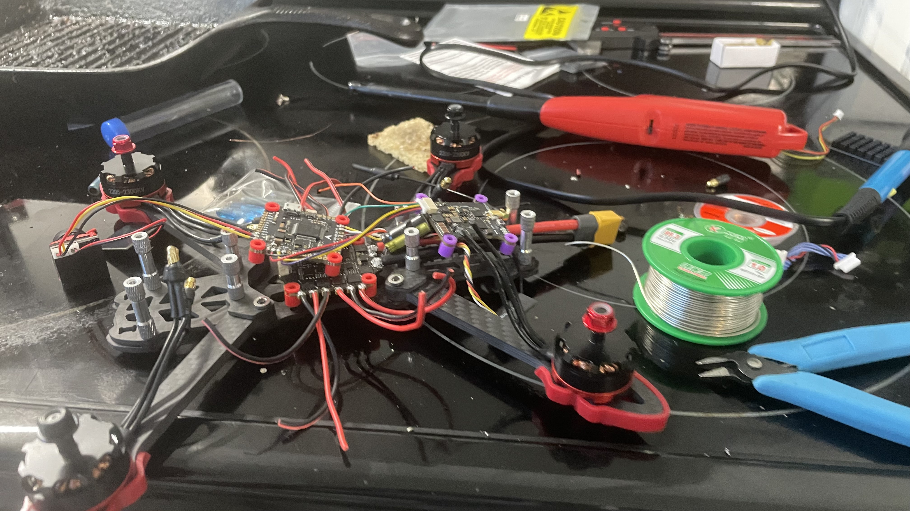
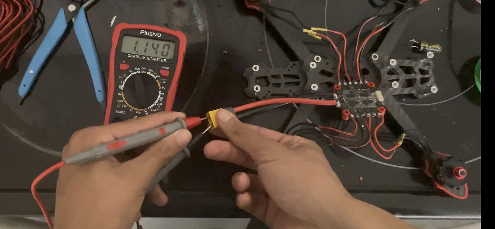

FPV Drone
Feburary 2026 - Current
I built a 5” FPV drone from scratch for under $100. Starting from watching youtube videos of other drone builds, then chose parts that would also work for the budget. After watching more tutorials, I assembled and soldered everything together, before checking for shorts. Finishing the physical build, I then worked on software, flashing Betaflight firmware, binding the ELRS receiver to my RadioMaster Pocket transmitter, configuring the VTX, and setting up the OSD to get real-time flight data overlaid on the video feed. Getting everything working reliably meant troubleshooting along the way which was a pain to sort out.
Still, before flying the real thing, I trained on a simulator without the risk of crashing actual hardware. That practice made the transition to real flight far smoother, and gave me a genuine appreciation for how much the electronics, tuning, and pilot skill all have to come together for a build like this to actually fly the way it's supposed to. Then, I took it out to a field and crashed the drone. Again and again. Just knowing the drone is real this time instead of a simulator made me nervous, but after each crash, I get slightly better. Still have a long way to go but I’m enjoying the journey.


